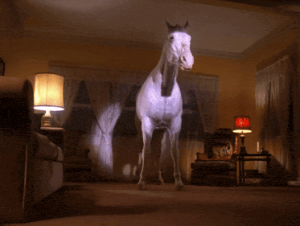

Experiência profissionalCASE 001
Warehouse Management Sistem
Evolução de um WMS utilizado por mais de 2.000 pessoas, cobrindo estoque, pedidos, picking, packing, triagem e devoluções. Atuação em frontend, APIs e regras de negócio.
Eu sou Rafael, desenvolvedor Full Stack. Transformo problemas reais em aplicações úteis, conectando boas decisões de engenharia a experiências que fazem sentido para quem usa.
"This is, excuse me, a damn fine stack of technologies!".
React, TypeScript, Node.js... e uma pitada de curiosidade.
Sou desenvolvedor Full Stack com experiência profissional em React, TypeScript, Node.js, Prisma e MySQL, trabalhando na construção e evolução de aplicações usadas no dia a dia de operações reais.
Minha trajetória começou no frontend e cresceu para o backend. Hoje, gosto de entender o sistema por inteiro: da interface e experiência de uso às regras de negócio, APIs e persistência de dados.
Acredito em código legível, colaboração e decisões técnicas que resolvem problemas concretos, não apenas os que ficam bonitos no quadro.
Uma coleção de coisas estranhas e interessantes.
Sempre aprendendo. Sempre questionando. Nunca totalmente acomodado.
Evolução de um WMS utilizado por mais de 2.000 pessoas, cobrindo estoque, pedidos, picking, packing, triagem e devoluções. Atuação em frontend, APIs e regras de negócio.
Uma estante digital para registrar jogos, acompanhar experiências e construir um diário pessoal de jogador. Projeto de estudo com catálogo externo e persistência própria.
API de pagamentos construída para praticar fundamentos de backend financeiro, com validações, persistência e idempotência para evitar operações duplicadas.
Aplicação para gestão de comandas de restaurante, com comunicação em tempo real e interfaces web e mobile para aproximar salão e operação.
Um registro de lugares, projetos e aprendizados ao longo do caminho.
Atuação no desenvolvimento e evolução de aplicações de e-commerce e sistemas internos, inicialmente com foco na reconstrução do WeDrop 2.0 utilizando React e TypeScript, desenvolvendo interfaces, integrações com APIs, hooks reutilizáveis e melhorias de performance, como otimização de carregamento e paginação. Posteriormente, atuei como principal desenvolvedor do WMS da empresa, assumindo responsabilidades no desenvolvimento full stack com React, TypeScript, Node.js, Express, PrismaORM e MySQL. Desenvolvi APIs REST, regras de negócio, modelagem e evolução do banco de dados, além de funcionalidades como picking reverso, comunicação em tempo real com Socket.IO nos fluxos de picking e packing, seleção em massa e filtros e ordenação dinâmicos em tabelas. Sempre colaborando em decisões técnicas e code reviews.
Início da trajetória profissional em desenvolvimento full stack.
Desenvolvimento de aplicações web utilizando JavaScript, HTML e CSS, além de softwares para sistemas Microsoft voltados ao monitoramento de radares de velocidade e semáforos inteligentes. Atuação com C# e .NET, integração com APIs de geolocalização para rastreamento de ônibus, programação de dispositivos RFID e gerenciamento de bancos de dados SQL Server.
Talvez nossos caminhos estejam prestes a se cruzar.
